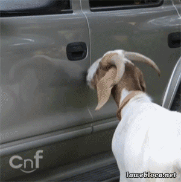

Kinderboerderij Het Gillende Geitje is een traditionele kinderboerderij met veel verschillende boerderij- en huisdieren. U zult zich wellicht afvragen waar de naam van onze kinderboerderij vandaan komt. Komt u vooral langs dan is deze vraag al snel beantwoord. Naast geiten zijn er op onze kinderboerderij ook schapen, een kalf, kippen, konijnen, 2 lama's en een zebra.
Klik hier voor onze dieren.Uniek voor onze kinderboerderij is de welkomst-geit die de gasten welkom heet.
Onze kinderboerderij is ontstaan uit een fusie van twee buurt-boerderijen, De Gave Gans en De Zieke Koe. Nadat de De Gave Gans failliet is gegaan, heeft De Zieke Koe deze (en al zijn dieren) overgenomen. Door de vervuilde grond onder De Zieke Koe is besloten om een nieuwe locatie te betrekken en de naam aan te passen naar Het Gillende Geitje. Klik hier voor meer informatie over de Gillende Geit.
| Dier | Aantal | Aaibaar |
|---|---|---|
| Geit | 16 | Ja |
| Koe | 1 | Nee (ziek) |
| Kip | 6 | Nee |
| Schaap | 3 | Ja |
| Gans | 2 | Nee |